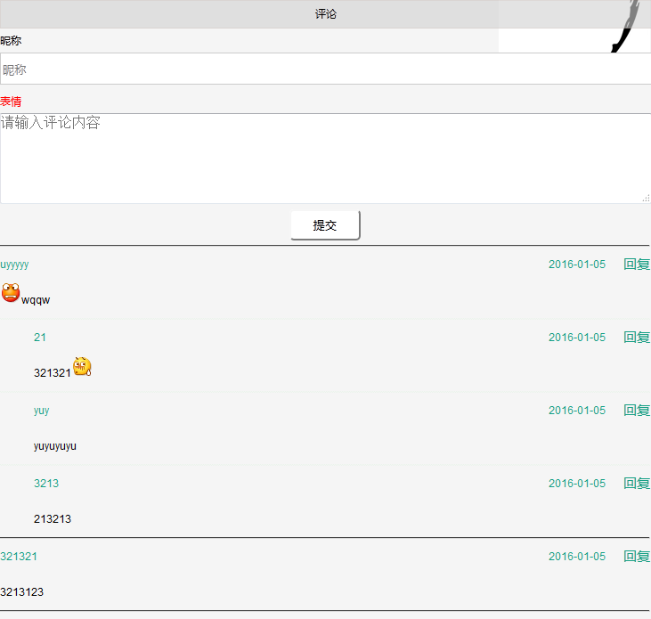

基于Thinkphp开发的一个简单的带表情的评论回复实例，可以无限回复，适合新手学习或作为毕业设计作品等。

评论提交验证
1 $(".submit-btn").click(function() {
2 var $this = $(this);
3 var name = $this.parent().siblings().children('.name1').val();
4 var content = $this.parent().siblings().children('.comment').val();
5 if (name == "" || content == "") {
6 alert("昵称或者评论不能为空哦");
7 return false;
8 }
9 });
添加评论
1 $rules = array(//定义动态验证规则
2 array('comment', 'require', '评论不能为空'),
3 array('username', 'require', '昵称不能为空'),
4 // array('username', '3,15', '用户名长度必须在3-15位之间！', 0, 'length', 3),
5 );
6 $data = array(
7 'content' => I("post.comment"),
8 'ip' => get_client_ip(),
9 'add_time' => time(),
10 'pid' => I('post.pid'),
11 'author' => I('post.username'),
12 );
13
14 $comment = M("comment"); // 实例化User对象
15 if (!$comment->validate($rules)->create()) {//验证昵称和评论
16 exit($comment->getError());
17 } else {
18 $add = $comment->add($data);
19 if ($add) {
20 $this->success('评论成功');
21 } else {
22 $this->error('评论失败');
23 }
24 }
评论递归函数
1 function CommentList($pid = 0, &$commentList = array(), $spac = 0) {
2 static $i = 0;
3 $spac = $spac + 1; //初始为1级评论
4 $List = M('comment')->
5 field('id,add_time,author,content,pid')->
6 where(array('pid' => $pid))->order("id DESC")->select();
7 foreach ($List as $k => $v) {
8 $commentList[$i]['level'] = $spac; //评论层级
9 $commentList[$i]['author'] = $v['author'];
10 $commentList[$i]['id'] = $v['id'];
11 $commentList[$i]['pid'] = $v['pid']; //此条评论的父id
12 $commentList[$i]['content'] = $v['content'];
13 $commentList[$i]['time'] = $v['add_time'];
14 // $commentList[$i]['pauthor']=$pautor;
15 $i++;
16 $this->CommentList($v['id'], $commentList, $spac);
17 }
18 return $commentList;
19 }本文转自：https://www.sucaihuo.com/php/557.html 转载请注明出处！